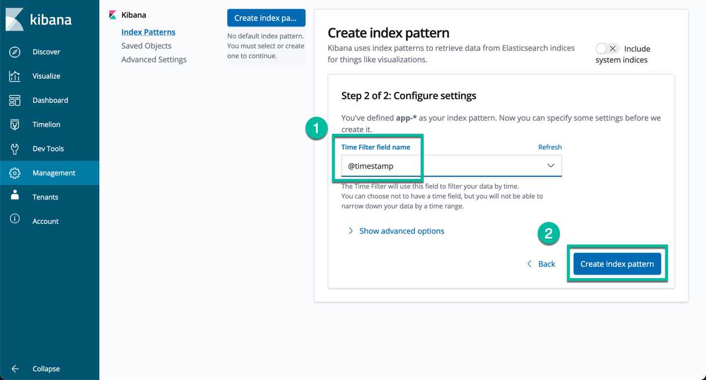

CP4I Demo Prerequisites¶
For the purpose of the PE Bootcamp, we installed and ODF storage cluster and will use those options when performing the exercise.
Choosing Storage
Based on where you have deployed your OCP cluster you will need to set up an environment variable to use the proper storage classes when deploying the instances. The two option available at the moment are ROKS and ODF. Note that if you use a cluster in TechZone, you need to make sure to use ODF otherwise you may end up with a cluster using NFS that is NOT supported and you will need to recreate your cluster.
Getting the Code¶
Do not forget to clone repo cp4i-ace-artifacts to your workstation alongside with this repo. The repo is located here, it includes the App Connect Integrations. Check the list of pre-requisites before using this guide using the following command:
New to cloning GitHub repositories?
If you are new to GitHub and need help with basic commands, GitHub provides very easy to follow tutorials such as this one for cloning repos
Once you confirm you have the required tools in your workstation you are ready to use the following guide.
Note the scripts used in this guide have been developed and tested on mac os.
Configure Your Environment for Deployment¶
Set environment variables:
-
Set the CP4I version you want to install. The options available are either the latest LTS or CD releases, so use the following commands:
!!! Warning "About the Version" At the time of writing this exercise, we perform an IPI install of OCP 4.17 on VMware and will use that cluster for the Integration demo environment. 16.1.1 is the first version of CP4I that supports 4.17. -
Set the OCP type based on the storage classes in your cluster:
About Storage
If you are performing this deployment into a ROKS cluster you would set the OCP type to
ROKS, but for our IPI cluster we must use the ODF storage cluster that we have already created.
Set a default storage class for your cluster:
If you have provisioned your OCP cluster in Tech Zone you can use the following script to set the proper default storage class:
Checking the default storage class
Curious to see what this was set to? You can always check your storage classes oc get storageclass. The default will be noted within the output
Install Logging with Kibana (Optional)¶
This part of the demo environment is optional, but if you have never used Kibana you may want to deploy this portion.
- Install ElasticSearch Operator:
oc apply -f resources/00a-elasticsearch-namespace.yaml
oc apply -f resources/00b-elasticsearch-operatorgroup.yaml
oc apply -f resources/00c-elasticsearch-subscription.yaml
SUB_NAME=$(oc get deployment elasticsearch-operator -n openshift-operators-redhat --ignore-not-found -o jsonpath='{.metadata.labels.olm\.owner}');if [ ! -z "$SUB_NAME" ]; then oc get csv/$SUB_NAME -n openshift-operators-redhat --ignore-not-found -o jsonpath='{.status.phase}';fi;echo
oc apply -f resources/00d-logging-namespace.yaml
oc apply -f resources/00e-logging-operatorgroup.yaml
oc apply -f resources/00f-logging-subscription.yaml
SUB_NAME=$(oc get deployment cluster-logging-operator -n openshift-logging --ignore-not-found -o jsonpath='{.metadata.labels.olm\.owner}');if [ ! -z "$SUB_NAME" ]; then oc get csv/$SUB_NAME -n openshift-logging --ignore-not-found -o jsonpath='{.status.phase}';fi;echo
NAME READY STATUS RESTARTS AGE
cluster-logging-operator-756b4c48cc-lhkzs 1/1 Running 0 6m41s
collector-njm62 2/2 Running 0 5m36s
collector-nxpmd 2/2 Running 0 5m36s
collector-xjl96 2/2 Running 0 5m36s
collector-xsv6b 2/2 Running 0 5m36s
collector-z9k9l 2/2 Running 0 5m36s
elasticsearch-cdm-dxgp4gmf-1-577dc997c-sk7kg 2/2 Running 0 5m36s
elasticsearch-cdm-dxgp4gmf-2-5f5d564466-cgk6x 2/2 Running 0 5m35s
elasticsearch-cdm-dxgp4gmf-3-8695d6658c-lxblf 2/2 Running 0 5m33s
elasticsearch-im-app-27947625-m6qd9 0/1 Completed 0 2m58s
elasticsearch-im-audit-27947625-ht4jj 0/1 Completed 0 2m58s
elasticsearch-im-infra-27947625-r9j8c 0/1 Completed 0 2m58s
kibana-746f699cc-72qfk 2/2 Running 0 5m34s
Get Kibana URL:
Copy the URL to your favorite browser and hit "Enter". If you get the login page enter your credentials to get the following page. Accept the default values and click "Allow selected permissions": 
In the next page enter "app-*" in the index-pattern field and then click "Next step" as shown below: 
In the next page set the time filter field to "@timestamp" and then click "Create Index Pattern" as shown below: 
{kind=link}
Now you can create your own Dashboards or search for logs in the Discovery page as shown below:  Note creating a Dashboard is outside of the scope of this repo.
Note creating a Dashboard is outside of the scope of this repo.
Install ArgoCD (Optional)¶
Another optional step within this exercise is using ArgoCD. We will cover CD / GitOps later in the bootcamp week, you may optionally install it at this time and if you proceed with additional optional exercises you may find it useful.
- Create and configure the namespace:
- Create operator group:
- Create subscription: Confirm the operator has been deployed successfully before moving to the next step running the following commands: You should receive a response like this for each command respectively.
NAME READY STATUS RESTARTS AGE openshift-gitops-operator-controller-manager-7859c4ddd4-j2g8z 2/2 Running 0 98sNAME READY STATUS RESTARTS AGE cluster-6b66cd5687-h5fhm 1/1 Running 0 2m50s kam-868f97bd49-2mchk 1/1 Running 0 2m50s openshift-gitops-application-controller-0 1/1 Running 0 2m46s openshift-gitops-applicationset-controller-7d9dcdf769-s7ssn 1/1 Running 0 2m46s openshift-gitops-dex-server-5c66897994-f4wrq 1/1 Running 0 2m46s openshift-gitops-redis-5684c6fc5b-456nt 1/1 Running 0 2m46s openshift-gitops-repo-server-dcf86f4c7-d6x28 1/1 Running 0 2m46s openshift-gitops-server-55dbf6b78b-m4mhw 1/1 Running 0 2m46s - Enable kustomize:
- Once ArgoCD is up and running get the access info:
Install Instana (Optional)¶
Instana and Integration
Although we are not teaching Instana as part of the bootcamp, Instana and IBM Integration make a great story together. The end-to-end tracing feature alone makes it a compelling story that can be added to your Pilots. To enable your Integration for Instana you must have an Instana deployment already running. If you have that available, follow the below steps to add an agent to your cluster.
- Install Instana Agent Operator: Confirm the subscription has been completed successfully before moving to the next step running the following command: You should get a response like this:
- Set environment variables:
- Deploy Instana Agent running script: Confirm the instance has been deployed successfully before moving to the next step running the following command: You should receive a response like this.
- Set environment variable: